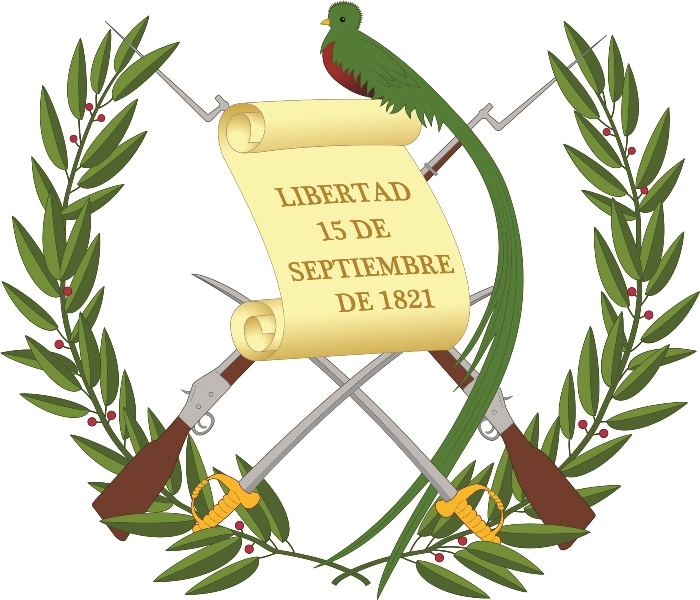
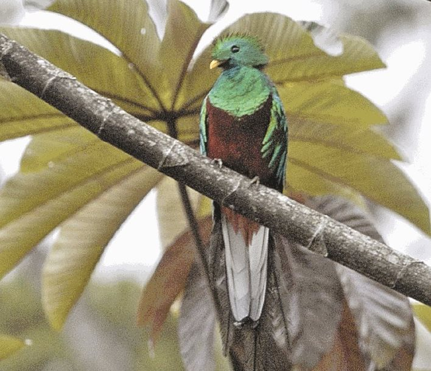

Centro America
Guatemala

- 
- 
Las tierras bajas del Petén, en el norte del país, fueron el hogar de la civilización maya clásica, cuyo apogeo se situó entre los siglos VII y IX d.c. Los Mayas fueron el origen de la difusión del arte, la arquitectura, la cerámica y la escritura guatemaltecos, y el sitio de Tikal abriga aún las ruinas de 3000 estructuras, entre ellos, templos piramidales, plazas y numerosos monumentos. Entre 1250 y 1520 fueron organizados los primeros estados (Quiché, Cakchiquel), cuyas guerras perpetuas debieron facilitar la colonización española.